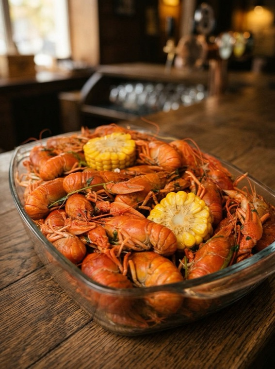

ГИД GYM BEER · КИШИНЁВ
Сколько пива и варёных раков брать на компанию
Собираясь с друзьями, всегда сложно угадать точное количество. Собрали проверенную таблицу расчёта по опыту наших гостей в Кишинёве.

1. Расчёт разливного пива в ПЭТ 1,5 л
На спокойный вечер (2–3 часа) в среднем уходит 1,2–1,5 л на человека (примерно 1 ПЭТ 1,5 л на гостя). Лучше взять 2–3 разных стиля: светлый лагер/пилснер + пшеничное или IPA.
2. Расчёт раков и закусок на вес
Варёных раков берут 400–600 г на человека (с учётом панциря). Рыбных и мясных закусок без отходов (лосось, балык, кальмар, бастурма) достаточно 150–200 г на человека.
3. Уточните наличие свежих раков по телефону
Варёные раки с кукурузой бывают свежими партиями — позвоните +373 69 482 293 перед визитом на Ботанику или Буюканы.
Полезная таблица
| Компания | Разливное пиво (ПЭТ 1,5 л) | Варёные раки | Микс закусок (рыба/кальмар/мясо) |
|---|---|---|---|
| 2 человека | 2 ПЭТ (3 л) | 0,8 – 1,0 кг | 300 – 400 г |
| 4 человека | 4 ПЭТ (6 л) | 1,8 – 2,2 кг | 600 – 800 г |
| 6 человек | 6 ПЭТ (9 л) | 2,5 – 3,2 кг | 1,0 – 1,2 кг |
| 10 человек | 9–10 ПЭТ (14–15 л) | 4,5 – 5,5 кг | 1,6 – 2,0 кг |
Какое пиво лучше всего подходит к варёным ракам?
Чистые светлые лагеры и пилснеры (HOLZ Munich Helles, Götter Pilsner, Kozel Světlý, Жигулёвское), чтобы не перебивать нежный вкус раков и укропа.
Где попробовать в Кишинёве?
В магазинах GYM BEER на Ботанике (бул. Куза Водэ 1/4) и Буюканах (ул. Алба Юлия 23/2), ежедневно 10:00–22:00.